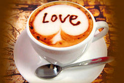
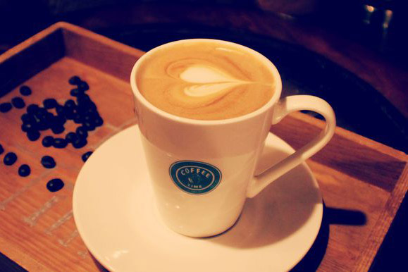
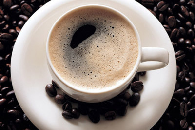

The Coffee House
The Coffee House
Find The Best
咖啡美食主题周

作者by痞子蔡 时间：2016年9月
《爱尔兰咖啡》讲述了相传，酒保为了心仪的女孩，将威士忌融合入热咖啡，发明了爱尔兰咖啡。咖啡的芬芳搭配烈酒的浓醇，在冷冽的夜里让人从掌心一路温暖到心底。一个四分之一爱尔兰血统的台北女孩，就因为听到这个故事，坚持煮出正统的爱尔兰咖啡，而且只在晚上十二点后供应。于是，爱情，就在某个雨夜中，迎着咖啡温柔的香气，得到诞生的灵感。一间小小的咖啡馆，一盏小小的灯，一个异乡的男子，邂逅了一位女孩。他对她的思念，从此再也分不清楚是对爱的想望，或是对咖啡的渴望了……
讲述了男主人公与一个具有爱尔兰血统的会调制纯正爱尔兰咖啡的女孩相识直到相恋的过程 对于咖啡的做法 提到了 纯正的爱尔兰咖啡须有爱尔兰威士忌 大多数咖啡馆会用苏格兰威士忌 但二者相比较 爱尔兰威士忌没苏格兰威士忌酒味烈 能够更好的和咖啡相融合 另外烤杯也特别重要 而且喝时热饮最佳 不宜搅拌 大多的咖啡店注重环境气氛和杯盘的使用 并且为了安全和省事 往往省去烤杯 用苏格兰威士忌 以至于做成的咖啡酒还是酒咖啡还是咖啡不能相融合 所以想喝到一杯纯正的爱尔兰咖啡是非常不易的

Find The Best
- 爱尔兰咖啡
- 爱尔兰咖啡（Irish Coffee）是一款鸡尾酒，是以爱尔兰威士忌为基酒，配以咖啡为辅料，调制而成的一款鸡尾酒。相传，一位都柏林机场的酒保为了心仪的女孩，将威士忌融入热咖啡，首次调制成爱尔兰咖啡这款鸡尾酒。
- September 02, 2016
- 
Find The Best
- 卡布奇若咖啡
- 20世纪初，意大利人阿奇加夏发明蒸汽压力咖啡机的同时，也发展出了卡布奇诺咖啡。卡布奇诺是在偏浓的咖啡上，倒入以蒸汽发泡的牛奶，此时咖啡的颜色就象圣芳济教会修士所穿的深褐色道袍的颜色。
- September 02, 2016
- 
Find The Best
- 曼巴咖啡
- 曼巴咖啡是一种混合咖啡。又称调配咖啡，调配的咖啡术语称为blend，也就是混合的意思。因为每种单一豆种的咖啡都有自己口味上的酸味、苦味、甜味、芳香特性，因此各个品种的咖啡豆按不同比例混合，能够产生不同的风味。
- September 02, 2016
- 
Find The Best
- 曼特宁咖啡
- 曼特宁咖啡产于亚洲印度尼西亚的苏门答腊，别称“苏门答腊咖啡”。她风味非常浓郁，香、苦、醇厚，带有少许的甜味。一般咖啡的爱好者大都单品饮用，但也是调配混合咖啡不可或缺的品种
- September 02, 2016

Find The Best
- 猫屎咖啡
- 麝香猫咖啡（猫屎咖啡），产于印度尼西亚。是世界上最贵的咖啡之一，每磅的价格高达几百美元，它是由麝香猫的粪便中提取出来后加工完成，麝香猫吃下成熟的咖啡果实，经过消化系统排出体外后，由于经过胃的发酵，产出的咖啡别有一番滋味，成为国际市场上的抢手货。
- September 02, 2016

Find The Best
- 摩卡咖啡
- 摩卡咖啡（CafeMocha）是一种最古老的咖啡，其历史要追溯到咖啡的起源。它是由意大利浓缩咖啡、巧克力酱、鲜奶油和牛奶混合而成，摩卡得名于有名的摩卡港。十五世纪，整个中东非咖啡国家向外运输业不兴盛，也门摩卡是当时红海附近主要输出一个商港。
- September 02, 2016
关于我们
因为喜欢，所以专注，因为喜欢，所以坚持，欢迎来到我的咖啡小屋。
美食新闻
- 花式拿铁咖啡
- 今天这杯咖啡其实非常简单，特浓意式咖啡加鲜奶和奶泡，其实也就是拿铁了，嘿嘿，筛上一层可可粉，呈现出完全不同的模样，
- 咖啡甜酒
- 含有咖啡因，有刺激中枢神经，促进肝糖元分解，升高血糖的功能。适量饮用可使人暂时时精力旺盛，思维敏捷。
- 花式咖啡
- 花式咖啡是加入了调味品以及其他饮品的咖啡。 其实花式咖啡并不需要拉花，拉花只是为了咖啡的造型更好看一点。
- 咖啡果冻
- 原料：咖啡液、吉利丁、糖、炼乳。